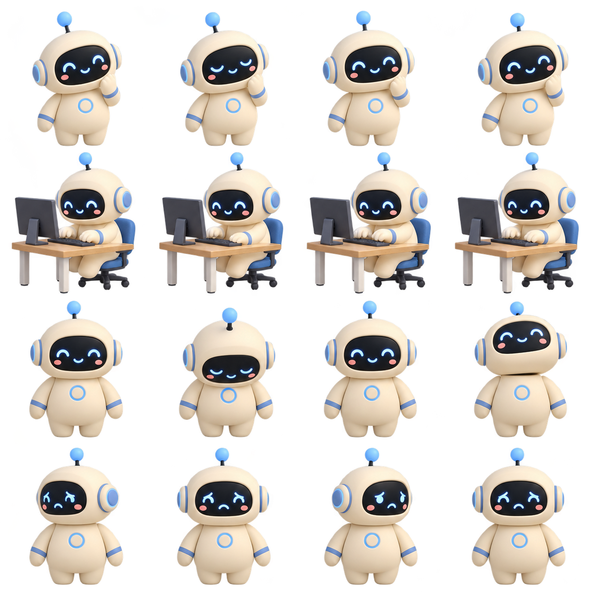

<!doctype html>
<html lang="en">
<meta charset="utf-8">
<meta name="viewport" content="width=device-width,initial-scale=1">
<title>Meridian mascot animation preview</title>
<link rel="stylesheet" href="mascot.css">
<style>
  body { margin: 0; min-height: 100vh; display: grid; place-content: center; background: #f8fafc; font: 14px system-ui; color: #24405e; }
  main { text-align: center; padding: 24px; max-width: 550px; }
  h1 { margin: 0; font-size: 26px; } p { color: #66778c; }
  figure { margin: auto !important; }
  nav { display: flex; justify-content: center; flex-wrap: wrap; gap: 8px; margin-top: 24px; }
  button { background: white; color: #24405e; border: 1px solid #d5e0ec; border-radius: 20px; padding: 9px 14px; cursor: pointer; font: inherit; }
  button[aria-pressed=true] { background: #24405e; color: white; }
  button:focus-visible { outline: 3px solid #589eea; outline-offset: 3px; }
</style>
<main>
  <h1>Meet Meridian</h1>
  <p>Animation preview · manual states, no agent execution</p>
  <figure class="meridian-mascot is-idle">
    <div class="meridian-mascot__stage" aria-hidden="true">
      <div class="meridian-mascot__frame">
        
      </div>
    </div>
    <figcaption role="status" aria-live="polite"><span class="meridian-mascot__indicator"></span><span id="label">Ready when you are</span></figcaption>
  </figure>
  <nav aria-label="Preview animation states">
    <button data-state="idle" aria-pressed="true">Idle</button>
    <button data-state="thinking" aria-pressed="false">Thinking</button>
    <button data-state="working" aria-pressed="false">Working</button>
    <button data-state="waiting" aria-pressed="false">Waiting</button>
    <button data-state="approval" aria-pressed="false">Approve / Nod</button>
    <button data-state="success" aria-pressed="false">Success</button>
    <button data-state="error" aria-pressed="false">Error</button>
  </nav>
</main>
<script>
  const labels = {idle:'Ready when you are',thinking:'Thinking',working:'Working',waiting:'Waiting for your approval',approval:'Approved',success:'Completed',error:'Needs attention'};
  document.querySelector('nav').addEventListener('click', event => {
    const button = event.target.closest('button');
    if (!button) return;
    document.querySelector('figure').className = 'meridian-mascot is-' + button.dataset.state;
    document.querySelector('#label').textContent = labels[button.dataset.state];
    document.querySelectorAll('button').forEach(item => item.setAttribute('aria-pressed', String(item === button)));
  });
</script>
</html>
